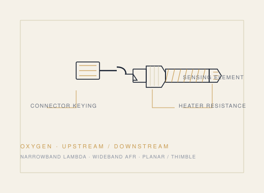
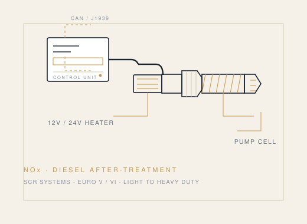
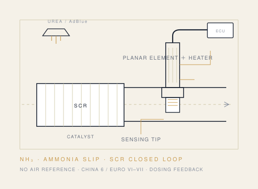

A sensor is a small part with a long list of ways to be wrong. These are the ones we have chosen to stand behind — with the application data to place them correctly.
Narrowband lambda and wideband air-fuel ratio sensors for petrol and diesel platforms — upstream and downstream, planar and thimble construction.
A large share of aftermarket oxygen-sensor returns trace back to the heater circuit and the connector, not the sensing element. So those are the two things we check hardest: heater resistance across the batch, and connector keying matched to the OE application rather than to “close enough”.

| Grade | What it is | When to specify it |
|---|---|---|
| Aftermarket grade | High-turnover service numbers built to OE function, at aftermarket cost. | Volume programmes where the return rate is the KPI. |
| Original industrial grade | OE-equivalent construction and materials for workshops that will not accept a downgrade. | Premium tier, fleet contracts, warranty-sensitive accounts. |
| Modified wire assembly | Cable length and connector built to drawing where the OE assembly is unavailable or discontinued. | Obsolete coverage, restoration, low-volume specials. |
The most demanding sensor in the exhaust line. 12V and 24V NOx sensors for SCR systems across light, medium and heavy duty diesel.
These are the parts customers call about when the truck is already in the bay. Communication behaviour, heater control and the difference between a dead sensor and a dead SCR system are what we get asked about most — and what we answer with test data rather than a part number.

An SCR system that doses urea on a model is guessing. One that measures the ammonia leaving the catalyst is controlling. The NH₃ sensor is what turns the second half of the SCR loop from assumption into measurement — and it is what China 6, Euro VI and Euro 7 actually ask the system to prove.
The element is a planar, co-fired zirconia stack with an integrated heater and no air reference. Structurally it belongs to the same family as a planar oxygen sensor, packaged into the same kind of assembly. That is the whole reason we can offer this line: it runs on the planar assembly we already build oxygen sensors on.

| Stage | Status | What it means for you |
|---|---|---|
| Sensing element | Available | Ammonia-selective planar element, integrated heater, no air reference required. |
| Packaging / assembly | Available | Built on our existing planar oxygen-sensor assembly line — heater control and connector keying are the same discipline. |
| Application engineering | Available | Thread, hex, cable length, connector and labelling set to your drawing, then validated against the application you name. |
| Catalog numbers & fitment | In progress | Not published. We do not put a number on a page before we can ship it, so ask for a project quote instead. |
We are developing PM (particulate) sensors for DPF differential and soot-load faults. They are not in batch supply, so they are not listed above as a product line and we will not quote them as one.
When the line is real, it moves up into the three above, with part numbers and fitment data attached. Until then, the honest answer to “can you supply PM sensors” is: not yet. If you are working on a PM application and want to be told when that changes, say so and we will come back to you.
Most supplier pages tell you what a company does. The useful version is what it refuses to do.
Send an OE number, a competitor number, or a photo of the part in the bay.